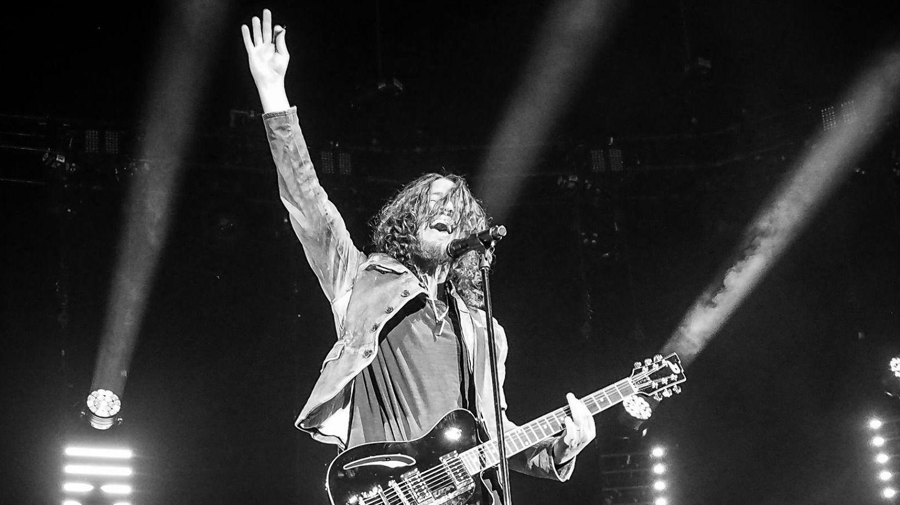

Chris Cornell Tribute

Chris Cornell, singer, writer, star
A Tribute for the Best
- Born in Seattle, WA in 1964
- Performed with Soundgarden
- Performed with Temple of the Dog
- Performed with Audioslave
- His solo work, including albums like Euphoria Morning and Higher Truth, showcased his emotional depth and musical versatility
- His voice could soar from deep baritone to high tenor, making him one of the most dynamic singers in rock history, with Four-Octave vocal range
- From grunge to soul, acoustic ballads to hard rock anthems, Cornell refused to be boxed into one style
- Died on May 18, 2017